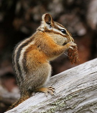
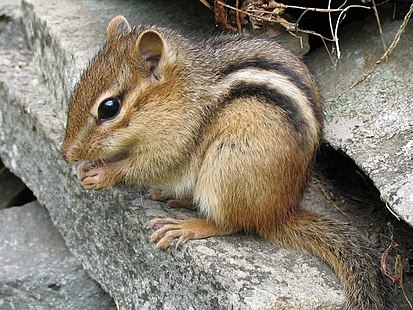
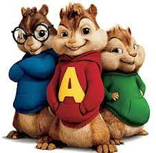

Сибирский бурундук (Tamias sibiricus) представитель рода бурундуков. Этот вид распространён начиная с Кировской области, далее по Уралу, до Сахалина, верховьев Анадыря и до Казани, Южного Урала, Северной Монголии, Среднего Китая и Японии. Место обитания - хвойные, смешанные и лиственные леса, предпочитает опушки, светлые участки.
восточноамериканский бурундук[1] (лат. Tamias striatus), — млекопитающее семейства беличьих отряда грызунов. Обычный вид на востоке США и юго-востоке Канады. Видовое название лат. striatus означает «бороздчатый». Размеры тела — 14—19 см, хвоста — 8—11 см, масса — 70—140 г. Спина красновато-коричневая с пятью укороченными белыми полосками, окаймлёнными тёмным мехом. Хвост рыжевато-коричневый.
Э́лвин и бурундуки́» (англ. Alvin and the Chipmunks) — американская семейная комедия 2007 года о трёх бурундуках, основанная на истории вымышленной музыкальной группы 1960-х и одноимённом американском сериале 1980-х годов. Мировая премьера состоялась 14 декабря 2007 года
